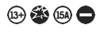
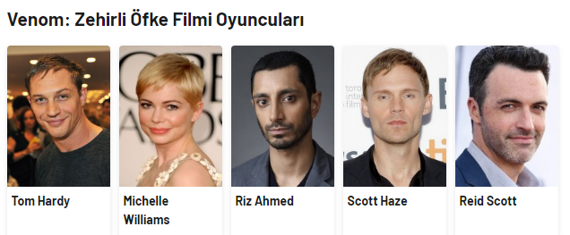

Bilim Kurgu , Aksiyon , Fantastik , Macera , Gerilim
Vizyon Tarihi
28 Aralık 2018
Yapımı
2018-ABD


Film Konusu: Venom:
Araştırmacı gazeteci Eddie Brock (Tom Hardy), başına gelen talihsiz bir olayın ardından, kariyerini yeniden ayağa kaldırabilmek için Life Foundation'ın gizli faaliyetlerini araştırmaya başlar. Bir tesiste denemeleri yapılan ortak yaşar-simbiyotla temas edince Venom adlı çok güçlü ve kontrolü zor bir yaratık ortaya çıkar.
Yönetmen:
Senaryo:
Yapımcı:
Ruben Fleischer
Ed Solomon, Todd McFarlane, Jeff Pinkner, Scott Rosenberg, Kelly Marcel
Avi Arad, Matthew Tolmach
Tiyatro ve Katılım
Tiyatro ve katılım kısmından tiyatro etkniliklerine katılabilirVe Tiyatro bilgilerine erişebilirsiniz
Sinema ve Katılım
Sinema ve Katılım kısmından Film bilgilerini Film içeriğine Ve Fragmana erişebilirsiniz ve katılabilirsiniz
Sosyal Medya Hesaplarımız'dan bizi takip edebilirsiniz